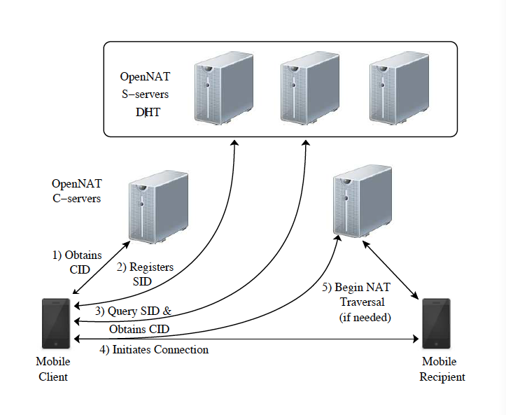

Introduction
The Problem
IPv4
- 32 bit addresses
- IPv4 exhaustion
NAT
- Using a single IP address for a whole network of computers.
- NATs only allow incoming traffic from an outside address to which an outgoing packet has already been sent to.
IPv6
- 128 bit addresses
- But slow adoption
NAT Traversal
- 90% success rate
- Existing libraries incompatible.
Our Goals
Our Solution
To develop a connectivity service that can transparently establish and maintain direct connections amongst clients.
Identity
- To identify the end points
Reliability
- If a new client is online, a connection should be established either directly or through a proxy
Mobility
- If an end-point might move and change its interenet connection, the service should track the change and transparently re-establish the connection
OpenNAT
OpenNAT Client
- Clients maintain an open connection with OpenNAT Service
OpenNAT Service
- Naming and Resolution Service
- NAT Traversal connection service
Connection
- Traditional socket architecture
OpenNAT Service
C-servers
- Client obtains a CID
- Helps in NAT Traversal
S-server
- Registers an SID
- Query SID and Obtain CID of recipient
OpenNAT System Architecture

Mobile Messaging app
Mew
C-servers
- Client obtains a CID
- Helps in NAT Traversal
S-server
- Registers an SID
- Query SID and Obtain CID of recipient
Thank You!